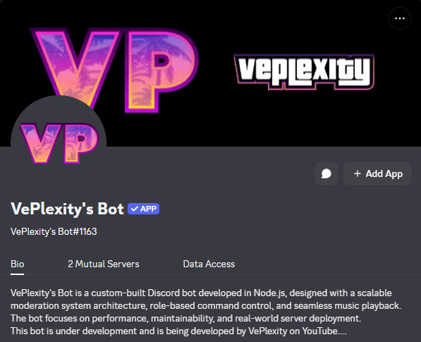

VePlexity’s Discord Bot is a custom-built system designed to manage, automate, and enhance server interactions in real-time. Built from scratch using event-driven architecture, it handles moderation, user interaction, and scalable command execution efficiently.

Advanced moderation system with customizable commands for user control and server management.
Music playback system (in development) designed for seamless streaming in voice channels.
Automation layer for handling repetitive tasks and improving server efficiency.
Real-time interaction engine ensuring instant command execution and dynamic responses.
The bot operates on an event-driven system using Discord’s gateway API. It listens to real-time server events such as messages, joins, and commands, and processes them through structured handlers.
Commands are modularized, allowing scalable expansion of features. The system ensures low latency responses and efficient execution across multiple server environments.
The bot is built using Node.js and Discord.js, leveraging asynchronous event handling and modular command structures.
It uses an event-based system to process user inputs efficiently, ensuring scalability and maintainability as new features are added.
Node.js • Discord.js • JavaScript • API Integration • Event-driven systems
I wanted to create a fully customized Discord experience tailored to my needs, combining moderation, music, and automation into one unified system.
This project helped me understand real-time systems, event handling, and how large-scale communication platforms operate behind the scenes.
This project reflects my ability to build real-time systems and scalable applications. I’m continuously improving it with new features and optimizations.